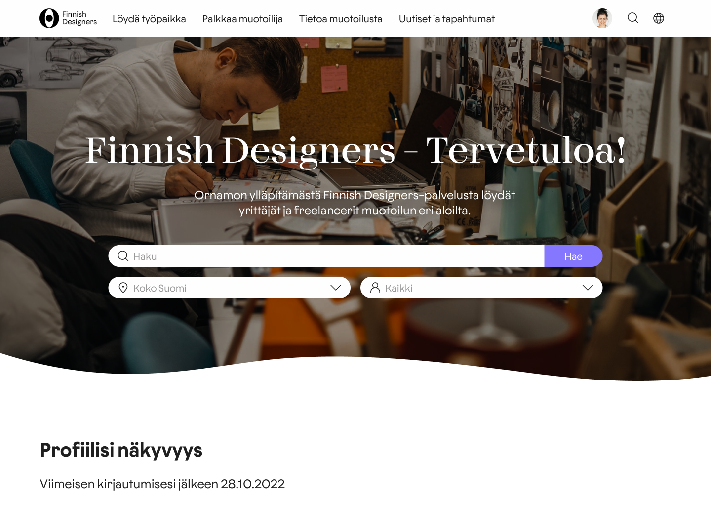
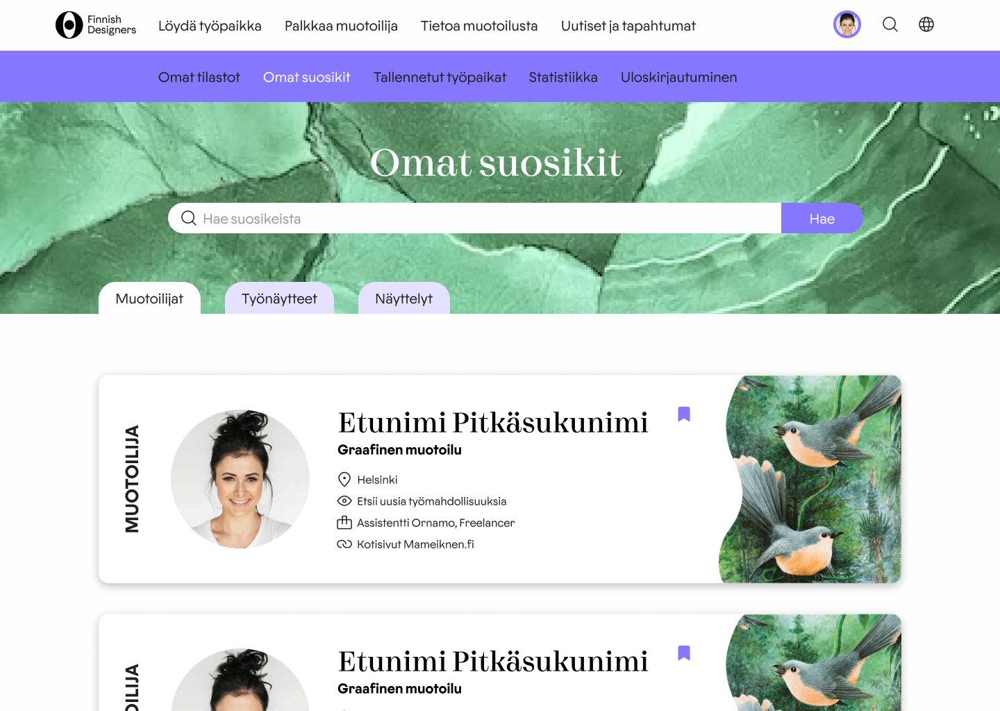

Assignment was to come up with an updated concept for Finnish Designers, a finnish portfolio platform and community for designers. I was part of two steps of the process: defining the problem with UX design methods and prototyping the search-engine for the website
Miro Eskelinen
Eemil Kalliokoski
Vladislav Khannolainen
Mercedes Kukkohovi
Iina Remonen
Ninja Vitikainen
Prototyping the search engine and all the UX design before
Figma
Customer provided us user research data from questionaires and interviews from which we started to define the problem with the current website and user personas based on most common user types and their goals.
Finnish Designers is a platfrom containing solely qualified designers because there is an application process for registeration, only designers with proper education or work experience can join. This makes it easy for employer to find suitable worker compared to other services such as Oikopolku or Duunitori that are not focused on designers nor check the qualifications of applicants. However, to make Finnish Designers attractive to employers, browsing through the website and especially the search engine needs to work seamlessly.
After recognizing the pain points and making the personas, we started to define the backbone of the user experience, design drivers and user flows. We made the user flows from point of view of the employer and the designer. After that I proceeded to prototyping the search engine.
Three key functions of the search engine are main search bar, location bar and category bar.
In here anything could be written, but when writing, the bar suggests automatically design fields, since those are the most commonly searched thing. Design fields are predetermined, the users can't create new ones so there won't be for example variants of the same design field with slighty different name. This makes the designers feel more unified and the search more efficient. If nothing is written, the bar suggests lastly searched things. Multiple search words can be added via comma that appears automatically when one search word is selected.
These are multiple choice fields. In location bar there are all the regions in Finland. You can also write in the bar in case you want to put a city in there. In category bar there are following options: designers, students, work samples, exhibitions, open jobs.
In search page first things visible after the search bar are the most recently added or updated contents. This makes the active users gain more visibility and encourages active updating. There are four types of search results: designers, work samples, exhibitions and open jobs. They all have distinctive preview cards so they differentiate from each other. We made the cards as vivid as possiple so they convey especially the personality of the designers.
Search engine is the first thing visible on the website because it's the top priority function.
Search results can be saved to favourites-page. This can be done from search results -page by clicking "save"-icon next to name in the preview card.
